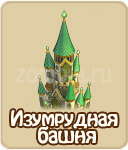

Получено: файл; исходный URL. Первая иллюстрация строки каталога; авторство не подтверждено. Идентичность изображения при замене домена не проверена. Страница: источник.
Изумрудная башня
браузерная версия; платформа и дата редакции не установлены- Тип
- Постройка
- Версия и дата
- браузерная версия; платформа и дата редакции не установлены
Данные по источнику · браузерная версия; платформа не установлена · дата редакции списка не установлена
Предварительно: Прочитан список. Имена файлов пиктограмм приводятся как есть: они не гарантируют идентификацию материала. Alt-атрибуты источника содержат ошибки. Отдельная статья и дата не проверены.. Требуется сверка.
- Сведения из списка, включая имена файлов пиктограмм
- [рисунок: izumrudnaja_bashnja.jpg] 70 Зб Стадии строительства Изумрудной башни: 1 стадия - 00 50 [рисунок: izumrud.jpg] 2 стадия - 0 100 [рисунок: izumrud.jpg] 3 стадия - 0 150 [рисунок: izumrud.jpg] 4 стадия - 0 300 [рисунок: izumrud.jpg] 5 стадия - 0 500 [рисунок: izumrud.jpg] 6 стадия - 1000 [рисунок: izumrud.jpg] 7 стадия - 1500 [рисунок: izumrud.jpg] 8 стадия - 2000 [рисунок: izumrud.jpg] Даёт возможность: Построй Изумрудную башню и она превратится в гору подарков. 0 стадия - опыт, 1 волшебная палочка; 1 стадия - 7 чертовщин, 7-10 сердец, 1000 монет; 2 стадия - 3 гипер, 5 хэлл, 1 Зб, 1000 опыта; 3 стадия - 16 изумрудной, 1 бабах; 4 стадия - 20 колокольчиков и изумрудных сердец, 5 Зб; 5 стадия - 30 чертовых ручных, 30 чертовых обувных и 20 чертовой секвойи; 6 стадия - 24 чертовщины, 5 Зб; 7 стадия - 10 хэлла, 10 изумрудной, 5 гипер; 8 стадия - 5 изумрудных сердец, 5 гипер, 3-4 изумрудной, 4 хэлла, 5 чертовщины, 5 колокольчиков, 8 Зб и 1000 опыта.


Данные по источнику · браузерная игра; возможны отличия платформ и редакций · даты публикаций указаны в источниках; дата последней правки неизвестна
Предварительно: Фанатские источники; возможны опечатки, зависимость источников и поздние правки. Исторические условия не обязательно действуют сегодня.. Требуется сверка.
- Строительство
- Восемь стадий требуют 50, 100, 150, 300, 500, 1000, 1500 и 2000 изумрудных сердец; всего 5600. Башня превращается в гору подарков.
Связанные сущности
нет проверенных связей — требуется сверка.